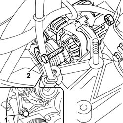
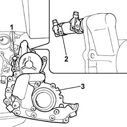
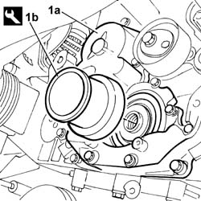
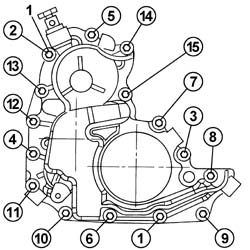
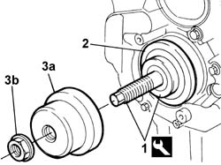
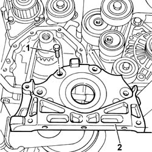
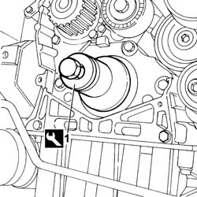

1020D14 FRONT CRANK SHAFT OIL SEAL COVER - R + R AND REPLACE SEALS FOR VERSIONS WITH OIL PUMP ON CRANK SHAFT, TIMING SIDE
- Path
- Procedures > 10 ENGINE UNIT > 1020 CRANKCASE SUMP AND COVERS > 1020D OIL SEALS ON CRANK SHAFT > 1020D14 FRONT CRANK SHAFT OIL SEAL COVER - R + R AND REPLACE SEALS FOR VERSIONS WITH OIL PUMP ON CRANK SHAFT, TIMING SIDE
- Kind
- repair procedure (removal / refitting; the operation number is the code)
- Applies to
- engines: 2.0 JTD 8V, 2.3 JTD 16V; all production periods
- Interactive page
- https://sloeber94.github.io/elrnDB-fDct/en/#/244000661
Applies to: engines: 2.3 JTD 16V; all production periods
 Removing
Removing
 Refitting
RefittingOp. 7055B54 UNDER-ENGINE GUARD - R R
Op. 4450B04 RIGHT FRONT WHEEL R R
Op. 1092B72 POWER STEERING PUMP DRIVE BELT - ALTERNATOR - R&R
See in Op. 1092A10
See in Op. 1032D12
See in Op. 1032B10
See in Op. 1032B44
- Position a suitable container under the vehicle to collect the engine oil.
- Undo the oil plug on the sump and drain the engine oil into the container.
1. Loosen the lower alternator retaining bolts.
- Lower the vehicle.
2. Undo the upper alternator retaining bolt and pull downward.

Applies to: engines: 2.3 JTD 16V; all production periods
1. Undo the bolts securing the front crankshaft oil seal cover.
2. Break the collar and disconnect the rigid pipe from its connection on the front cover.
3. Remove the front crankshaft oil seal cover from its seat.
- Recover the underlying gasket.

Applies to: engines: 2.3 JTD 16V; all production periods
Refitting
Removing- Fit a new front crankshaft cover gasket.
- Remove the oil sealing ring from its seat on the front cover.
- Fit the front cover with built-in oil pump (1a) and centre on the crankshaft using tool (1b).
 | Description | Code | Function |
|---|---|---|---|
1b | Locator | 99396037 | Tool for locating front crankshaft cover |

Applies to: engines: 2.3 JTD 16V; all production periods
1. Tighten the bolts securing the front cofver to the crankcase to torque, following the tightening order shown.
 | Value - daNm | Fastening | Component | Ø |
|---|---|---|---|---|
. | 1 | Bolts | FRONT COVER CRANKSHAFT | M6 |

Applies to: engines: 2.3 JTD 16V; all production periods
1. Tighten the tool threaded pin until it comes into contact with the drive gear seat on the crankshaft.
2. Position a new oil seal in its seat.
3. Position installing tool (3a) in contact with the oil seal and fully fit the oil seal into its seat on the front cover by screwing into nut (3b).
| Description | Code | Function |
|---|---|---|---|
1b | Fitting tool | 99346254 | Front cover gasket fitting |

Applies to: engines: 2.3 JTD 16V; all production periods
- Position the alternator in its seat and tighten the upper alternator retaining bolt to torque.
| Value - daNm | Fastening | Component | Ø |
|---|---|---|---|---|
. | (Lower) 4.9 | Bolt | ALTERNATOR ASSEMBLY | M10 |
- Tighten the upper alternator retaining bolt to torque.
| Value - daNm | Fastening | Component | Ø |
|---|---|---|---|---|
. | (upper) 4.9 | Bolt | ALTERNATOR ASSEMBLY | M10 |
See in Op. 1032B44
See in Op. 1032B10
See in Op. 1032D12
See in Op. 1092A10
Op. 1092B72 POWER STEERING PUMP DRIVE BELT - ALTERNATOR - R&R
Op. 4450B04 RIGHT FRONT WHEEL R R
Op. 0010T11 ENGINE OIL CHECK LEVEL AND TOP UP
Applies to: engines: 2.0 JTD 8V; all production periods
Removing
Refitting- Position the vehicle on the lift.
Op. 7055B54 UNDER-ENGINE GUARD - R R
Op. 4450B04 RIGHT FRONT WHEEL R R
Op. 1092G10 SINGLE ENGINE BELT R R
See in Op. 1092A10
See in Op. 1032D12
See in Op. 1032B10
See in Op. 1032B44
Op. 1020A20 CRANK CASE OIL SUMP - R + R CLEAN SEALS FOR SEALANT APPLICATION
1. Undo the bolts securing the front crankshaft oil seal cover.
2. Remove the front crankshaft oil seal cover from its seat.

Applies to: engines: 2.0 JTD 8V; all production periods
Refitting
Removing- Remove the oil sealing ring from its seat on the front cover.
- Apply sealant to the front cover.
 | Description | Qty. | Component | Type | Classification |
|---|---|---|---|---|---|
. | DOW CORNING 7091 | - | FRONT COVER CRANKSHAFT | Silicone sealant | - |
- Fit the cover and tighten the fixing bolts to the recommended torque.
| Value - daNm | Fastening | Component | Ø |
|---|---|---|---|---|
. | 1,5 | Bolt | FRONT COVER CRANKSHAFT | - |
1. Fit the seal using the tool.
| Description | Code | Function |
|---|---|---|---|
. | Fitting tool | 1.860.855.000 | Fitting crankshaft front oil seal |

Applies to: engines: 2.0 JTD 8V; all production periods
Op. 1020A20 CRANK CASE OIL SUMP - R + R CLEAN SEALS FOR SEALANT APPLICATION
See in Op. 1032B44
See in Op. 1032B10
See in Op. 1032D12
See in Op. 1092A10
Op. 1092G10 SINGLE ENGINE BELT R R
Op. 4450B04 RIGHT FRONT WHEEL R R
Op. 0010T11 ENGINE OIL CHECK LEVEL AND TOP UP
Op. 7055B54 UNDER-ENGINE GUARD - R R
- Remove the vehicle from the lift.
Topics linked from this page (7)
- 0010T10 ENGINE OIL CHECK LEVEL AND TOP UP
- 0010T11 ENGINE OIL CHECK LEVEL AND TOP UP
- 1020A20 CRANK CASE OIL SUMP - R + R CLEAN SEALS FOR SEALANT APPLICATION
- 1092B72 POWER STEERING PUMP DRIVE BELT - ALTERNATOR - R&R
- 1092G10 SINGLE ENGINE BELT R R
- 4450B04 RIGHT FRONT WHEEL R R
- 7055B54 UNDER-ENGINE GUARD - R R